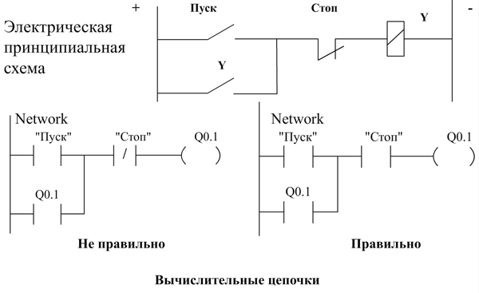

микропроцессорное устройство с проблемно – ориентированным программным обеспечением для реализации алгоритмов логического управления комплексами приводов и устройств промышленной автоматики.
Наиболее распространённая группа программируемых логических контроллеров (ПЛК) – micro PLC.
Они характеризуются моноблочной конструкцией, неизменяемой конфигурацией и небольшим (до 100) количеством входов и выходов.
Система электропневматических приводов с управлением от программируемого контроллера Состав контроллера серии S7-200 фирмы SIEMENS Цикл сканирования Взаимодействие программы со входами и выходами контроллера Области памяти контроллера Обращение к биту данных в памяти контроллера
Языки программирования контроллера S7-22x Язык LAD – (Ladder Diagram – лестничная логика) - графический язык для создания программы в виде вычислительных логических цепочек, напоминающих обычную релейно-контактную схему. Язык FBD – (Function Block Diagram – функциональная схема) - графический язык для создания программы в виде вычислительных цепочек, состоящих из логических и функциональных боксов. Язык STL – (Statement List - список инструкций) – язык программирования, использующий инструкции в виде мнемонических сокращений. Доступны все машинные команды процессора. Вычислительные цепочки с базовыми элементами языка LAD Структура прикладной прграммы Команды управления программой Битовые логические операции Пример релейно-контактных схем и соответствующей ей вычислительной цепочке Взаимодействие входов и выходов Расположение органов управления и сигнализации ПЛК S7-222 Главное окно программы STEP-7 Редактор языка LAD
Центральный модуль
- Центральный процессорный блок
- Источник питания
- Цифровые входы и выходы
- Коммуникационный порт
Модули расширения
- Дополнительные дискретные входы и выходы
- Дополнительные дискретные входы и выходы
Язык релейно-контактных схем (Ladder Logic)
Основные элементы релейно-контактных схем (LAD)
Элемент
Описание

Контакт. Представляет собой переключатель, через который может проходить ток. Через замыкающий (нормально открытый) контакт ток проходит только тогда, когда контакт замкнут (логическое значение равно 1). Через размыкающий (нормально замкнутый) контакт ток проходит только тогда, когда контакт разомкнут (логическое значение равно 0)

Обмотка. Представляет собой выход релейного типа, активизирующийся при прохождении тока

Бокс. Представляет собой функцию (например, функцию таймера, счётчика или математической операции), исполняемую при прохождении тока через бокс.
